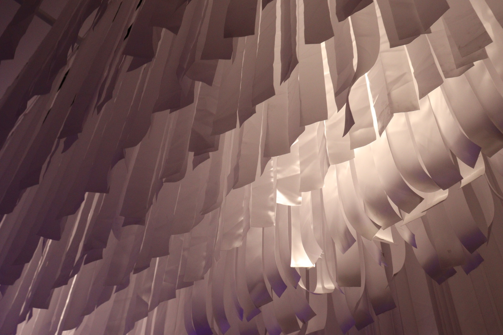
IKONO kiállítás
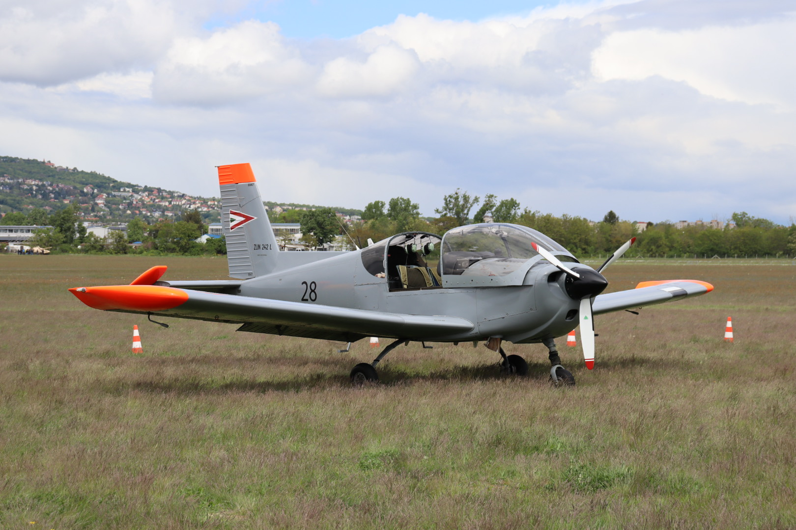
2025 Budapesti Repülőnap
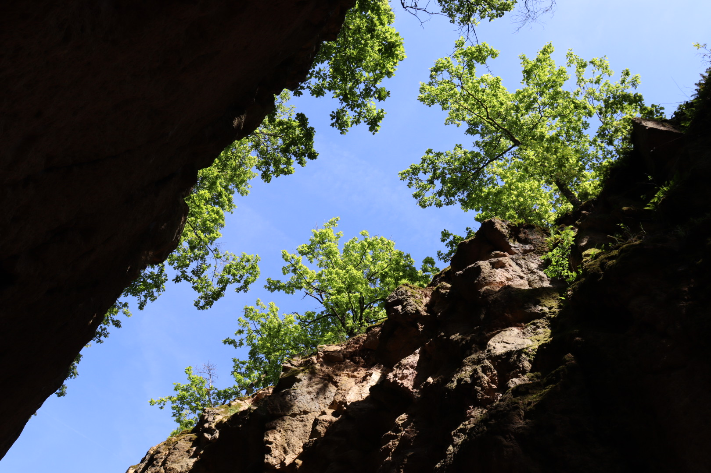
Megyer-hegyi tengerszem
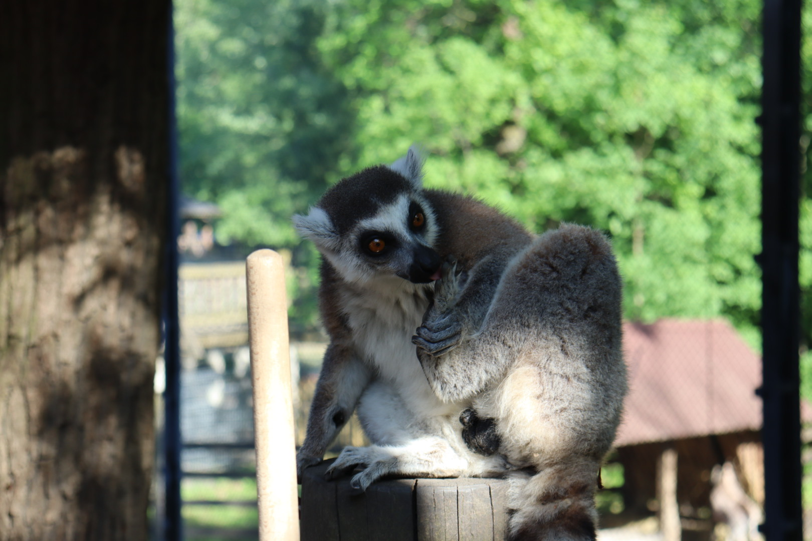
Nyíregyházi állatkert
Showreel 2024
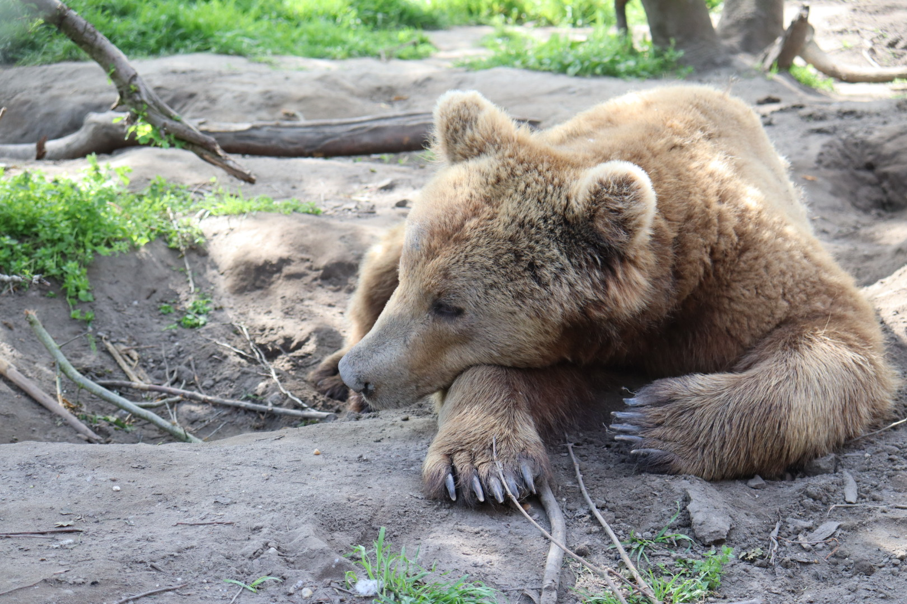
Veresegyházi medvepark
Keceli természetvédelmi terület
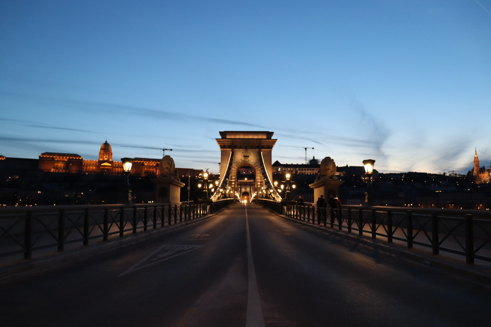
Budapest Széchenyi Lánchíd
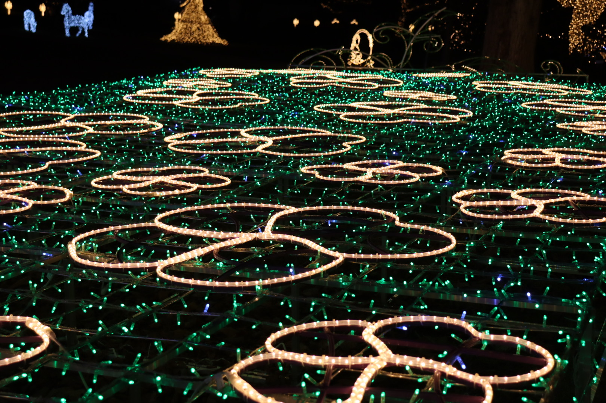
Gödöllői Kastély fénypark 2025
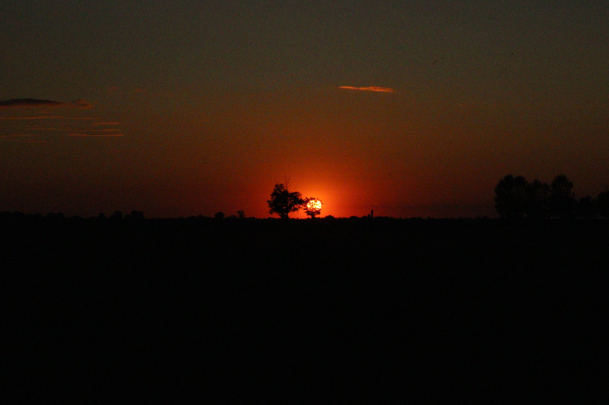
Keceli természetvédelmi terület
Gödöllői Kastély fénypark 2025
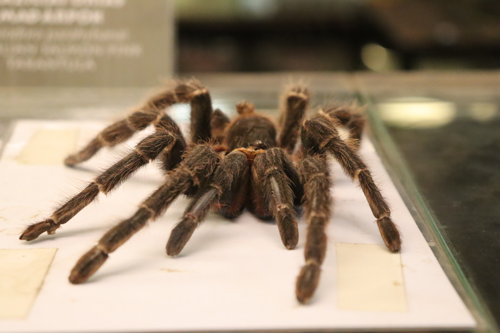
Nyíregyházi állatkert
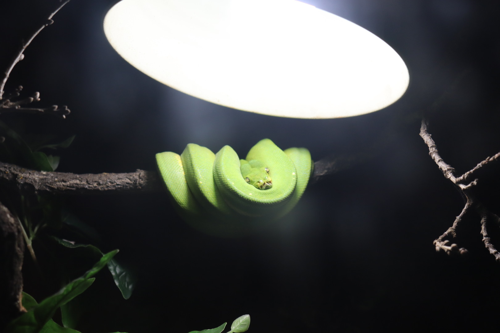
Budapesti állatkert
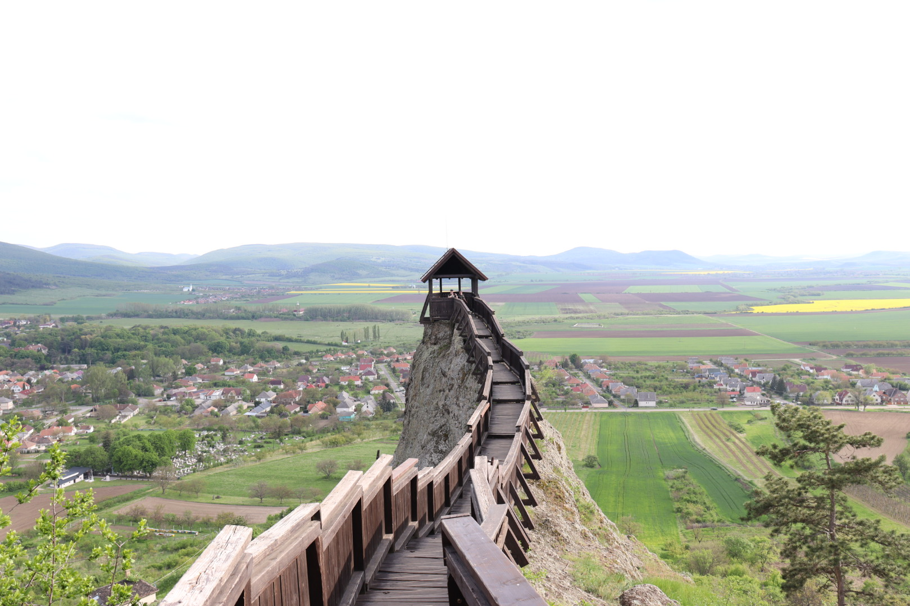
Boldogkő vára
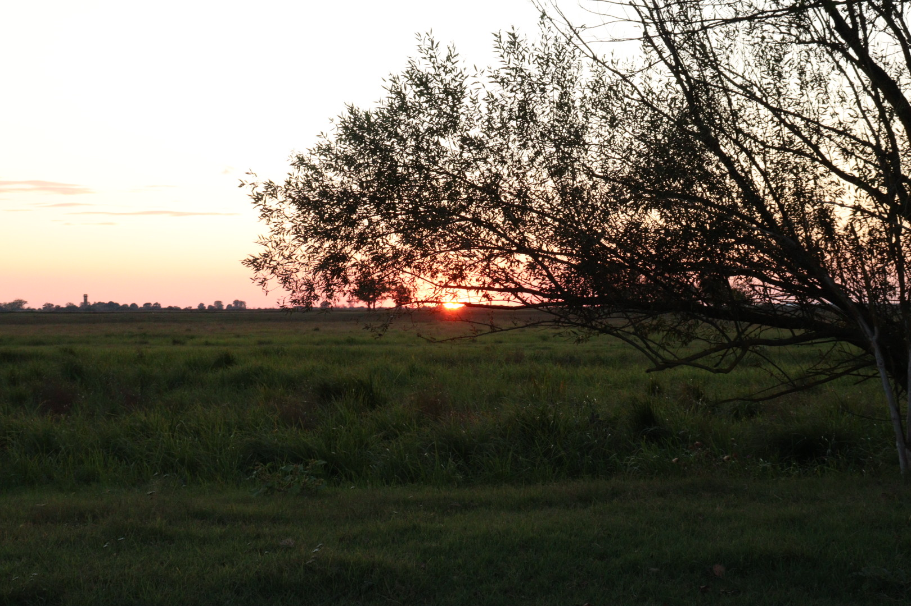
Keceli természetvédelmi terület